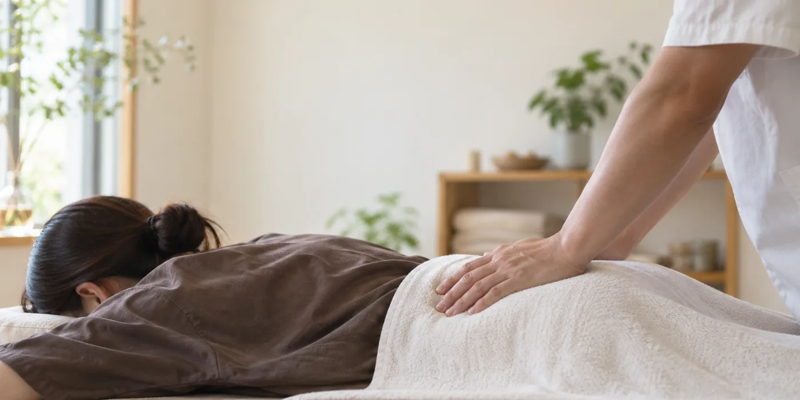
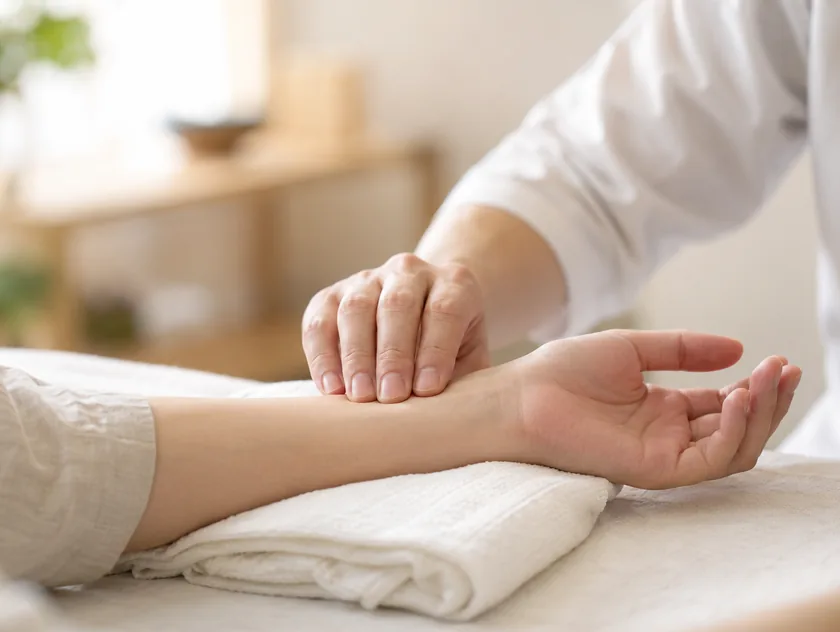
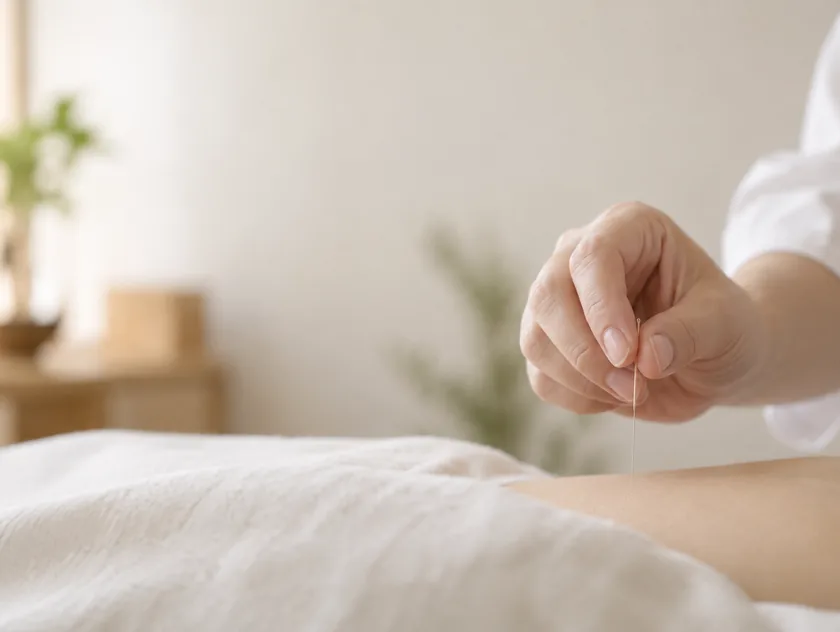

起きる前に身構えるくせが、
なくなりました。
十年近く、朝いちばんの動作が怖くて、ベッドの上で一度息を止めてから起きていました。青木先生は腰だけでなく股関節と背中も一緒に診てくださって、通ううちに「身構える」という手順を忘れている日が増えました。回数券をすすめられなかったことも、続けられた理由だと思います。
朝、起き上がるときに一度息を止めてしまう。長く座ったあと、最初のひと足が出ない。——腰の痛みは、腰だけを診ていても輪郭がつかめないことがあります。当院では、痛む場所より先に、その姿勢を続けてきた体の事情から伺います。

腰痛は「痛い／痛くない」より、どの動作で出るかに手がかりがあります。
あてはまる場面を、そのまま初回の問診でお聞かせください。
朝の起き上がり
布団から起きる最初のひと動作がつらい
長く座ったあと
立ち上がる瞬間、腰がすぐに伸びない
前かがみ
洗面や靴下をはく動作で腰が引っかかる
立ちっぱなし
30分ほどで腰の奥が重くなってくる
寝返り
夜中に腰の痛みで目が覚めることがある
脚の重さ・しびれ
太ももやふくらはぎに違和感が出る
重いものを持つとき
持ち上げる前に身構えるくせがついた
くり返す
楽になってもひと月ほどで戻ってしまう
いくつか思い当たる方は、腰そのものより、腰をかばい続けてきた体の使い方に事情があることがあります。「どの動作で出るか」を覚えておいていただけると、初回の問診が早く進みます。
腰の痛みが、腰の筋肉だけで起きているとはかぎりません。股関節が動きにくい、片脚にばかり体重が乗る、呼吸が浅く肋骨が広がらない——腰から離れた場所の事情が、結果として腰に負担を集めていることがあります。
そのため当院では、はじめに立ち方と歩き方を見せていただき、そのうえで脈とお腹の状態を確かめます。どこが硬いかだけでなく、どこが働けていないかを探すためです。押して痛い場所をほぐすだけでは数日で戻ってしまう、という方に多く来ていただいています。
通院の回数をこちらから決めることはしません。体の反応を見ながら、次はいつ頃がよさそうかを、その都度ご相談しています。
立つ・座る・前かがみになる。その三つの動きを見せていただきます。どの向きで痛みが出るのかを確かめてから、触れる場所を決めます。
東洋医学の脈診と腹診で、冷えや巡り、緊張のかたよりを確かめます。腰以外の場所に芯があることも、めずらしくありません。

腰まわりだけでなく、股関節・背中・脚の外側など、腰を支えている場所にも細い鍼を用います。強い刺激やボキボキと鳴らす操作は行いません。

所要時間は初回（問診＋脈診＋施術／90分・¥9,800）の目安です。2回目以降は施術60分・¥7,800となります。施術後には、腰に戻りにくくするための座り方と、脚の付け根をゆるめる簡単な体操をお渡しします。
初めての方へ起きる前に身構えるくせが、
なくなりました。
十年近く、朝いちばんの動作が怖くて、ベッドの上で一度息を止めてから起きていました。青木先生は腰だけでなく股関節と背中も一緒に診てくださって、通ううちに「身構える」という手順を忘れている日が増えました。回数券をすすめられなかったことも、続けられた理由だと思います。
※ 感じ方には個人差があります。施術の効果を保証するものではありません。

初回90分・¥9,800。
施術前に、あなたの体と心を丁寧に伺います。